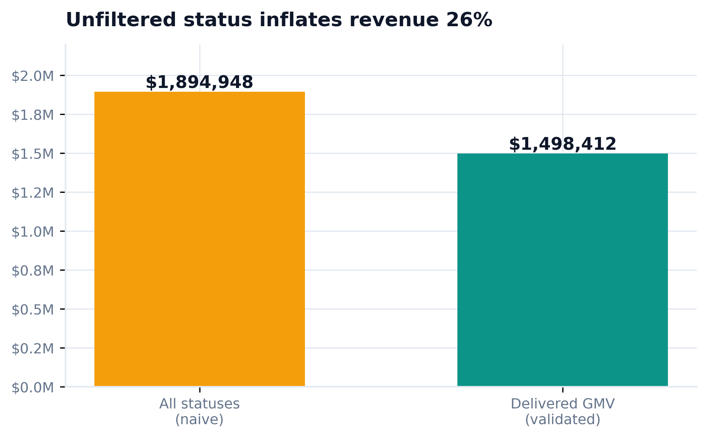
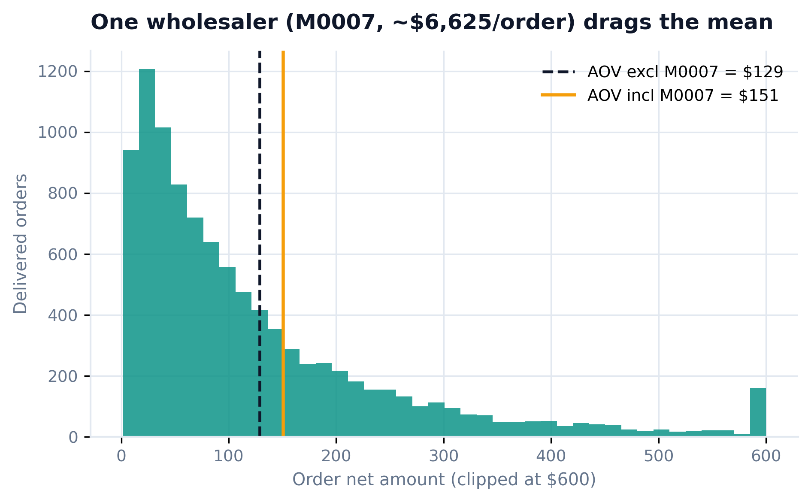
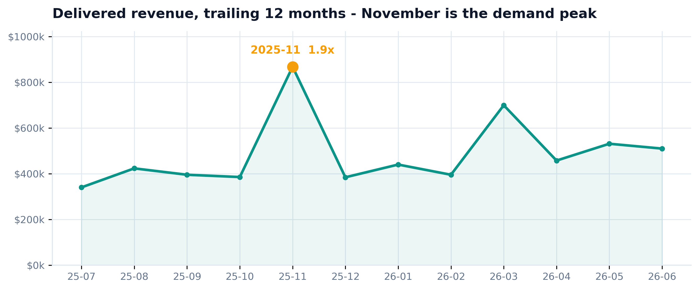
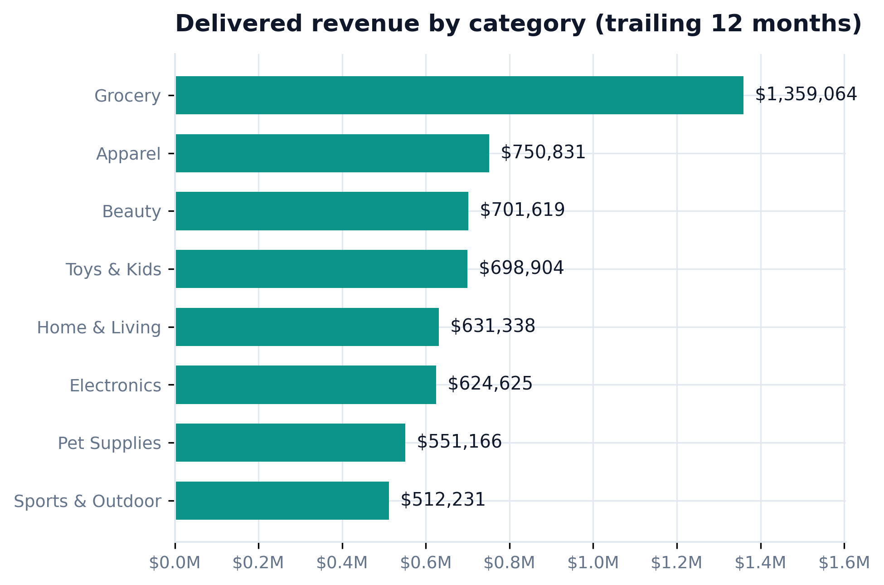
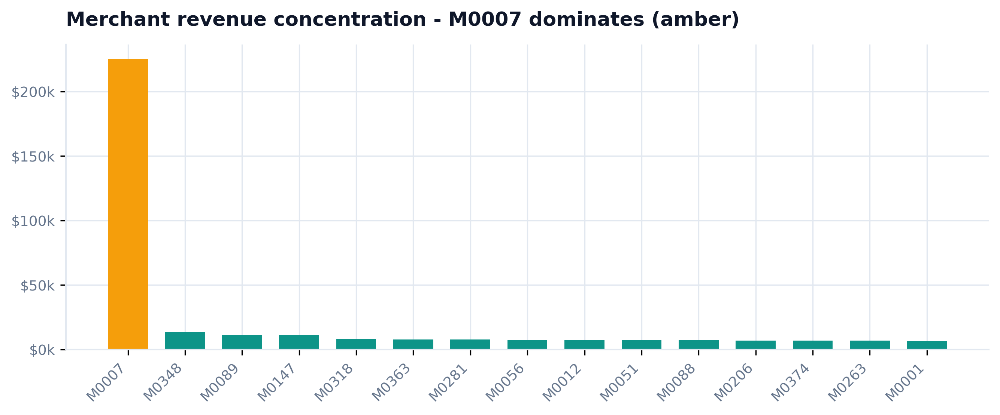

Anyone can average a column. The hard part is putting a number in front of a board and defending it. This skill defines eight executive metrics explicitly, validates each against the naive version an analyst ships by accident, then generates a self-contained scorecard where every figure is computed - zero hand-typed numbers. Seed 42, learn-python env, real Everrest marts.
This skill reads the marts - the clean tables that are the output of how-to-schema-and-warehouse. The modeling is done; the analytics judgement starts here. The field that quietly decides half the metrics is orders.status: only delivered orders are real revenue.
No new generator here: the marts already exist (seed 42, from the warehouse build). What matters for a scorecard is knowing the traps a naive metric walks straight into - each one is planted in the data on purpose and shows up in the validation at Step 5.
A dashboard shows numbers. A scorecard defends them. The objective is not "visualize the data" - it is to choose the few numbers a board decides on, and be able to say exactly what each one means and why it is right.
A scorecard needs a compute layer, a metric-contract discipline, and one hardened, dependency-free HTML artifact an executive can open anywhere. Assemble those before writing a single tile.
Every metric is a small, explicit function over the marts - the definition lives in code, not in a BI tool's config nobody can read.
Promote each metric's validation (status filter, denominator, no-negative checks) to a permanent gate so a definition never silently drifts.
Inline and harden the scorecard into one self-contained file - no CDN, no build - so it opens in any browser and drops into a board deck.
Tabular-nums heroes, one amber flag for risk, RAG status, period-over-period deltas - the conventions a board reads without a legend.
Formula + grain + filter + owner for every metric. If you cannot state all four, it is not board-ready - it is an aggregate.
The upstream EDA and warehouse skills surface the outlier and the status field this scorecard has to handle correctly.
One python script defines all eight metrics as functions, computes each metric AND its naive twin, writes every value to metrics.json, and injects those values into a self-contained HTML scorecard. Grab the real code below.
Formula, grain, filter - stated up front so a reader can audit each tile. This table ships on the scorecard itself.
| Metric | Formula | Grain | Key filter / rule |
|---|---|---|---|
| GMV (Delivered) | SUM(qty·unit_price·(1-discount)) | order | status = delivered, gross of returns |
| Platform Net Revenue | GMV × 11% | order | the take · rate = assumption |
| Delivered Orders | COUNT(orders) | order | status = delivered |
| Avg Order Value | MEAN(net_amount) + median | order | exclude M0007 wholesaler |
| Active Buyers | COUNT(DISTINCT customer_id) | customer | ≥ 1 delivered order this qtr |
| Return Rate | returns / delivered orders | order | denominator = delivered only |
| Repeat Buyer Rate | buyers with ≥2 orders / buyers | customer | delivered, within quarter |
| Top-Merchant Share | max merchant GMV / total GMV | merchant | concentration-risk flag |
The step every tutorial skips. Compute the naive version too, and show the gap. These are the numbers that separate a defensible board metric from a plausible-but-wrong one.


Left: counting cancelled and in-flight orders inflates revenue by 26% ($1.89M vs the true $1.50M). Right: one bulk wholesaler (M0007, ~$7,264/order) lifts platform AOV from $129 to $151 - the board metric excludes it and quotes the median beside the mean.
Generated by the script from metrics.json - not one figure is hand-typed. Self-contained HTML: no CDN, no build, drops into a board deck. This is the real artifact, embedded live.



| Trap in the data | Naive metric | Validated metric | Status |
|---|---|---|---|
| Cancelled / in-flight orders | $1,894,948 | $1,498,412 (delivered GMV) | ✓ 26% inflation removed |
| M0007 wholesale outlier | AOV $151 | $129 mean / $82 median | ✓ mean + median shown |
| Wrong return denominator | 5.0% (all orders) | 6.3% (delivered) | ✓ honest base |
| November seasonality | flat average | 1.9x peak flagged | ✓ trend on the card |
| Revenue concentration | hidden in total | top-merchant 15% tile | ✓ risk surfaced |
| Hand-typed numbers | the usual board deck | 0 - all from metrics.json | ✓ reproducible |
A panel of senior reviewer agents - each 10+ years in analytics engineering, board-facing insight, and commercial strategy - tore into the first draft of the scorecard and its definitions. Every fix below is in the code and the live card above.
"Your top tile says 'Net Revenue $1.5M'. That is GMV - merchandise flowing through the platform. The board will book it as company revenue and it is not. Everrest earns the take, ~$165k. This is the dangerous kind of wrong: plausible and off by 9x."
"'Active Merchants' is 400 every quarter, flat, green - because all 400 merchants transact every period. It is COUNT(*) of the merchant table wearing a KPI badge, and its validation text claims a safeguard the data contradicts."
"The AOV validation promises a median 'reported alongside' that the code never computes. And 5.7% ($85k) of your delivered GMV sits on orders that were later returned, while the tile next to it reports a 6.3% return rate. Internally inconsistent."
"The headline hard-types 'after the March promo'. There is no promo field anywhere in the marts - that is an unverifiable narrative on a deliverable that advertises 'zero hand-typed numbers'. And 'held' is spin on a metric that fell 2.4%."
"Repeat Buyer Rate ships as a static 67% with no prior period - decoration. A board wants retention moving. And with only 12 months of data, every QoQ delta here is measured against a seasonal high; there is no year-over-year comparator at all."
# v1 (before): one number, mislabeled - the board books $1.5M as revenue net_amount = qty * unit_price * (1 - discount) # merchandise value tile("Net Revenue", net_amount.sum()) # -> $1,498,412 (this is GMV!) # v2 (after): merchandise flow and the take are two different tiles gmv = net_amount.sum() # -> $1,498,412 GMV (Delivered) tile("GMV (Delivered)", gmv) # what flows through the platform tile("Platform Net Revenue", gmv * TAKE_RATE) # -> $164,825 what Everrest earns
Install once, then point it at your tables - the same 6 steps define and validate your board metrics and generate a self-contained scorecard on your data.
/plugin marketplace add phoebefu6/phoebe-data-skills /plugin install how-to-metric-to-scorecard@phoebe-data-skills